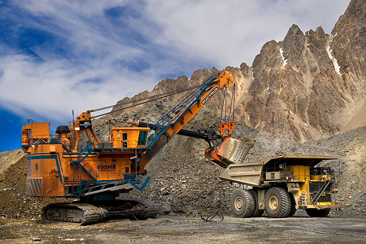

IGEMIN presta servicios de asesoría y consultoría de proyectos mineros
relacionados a estudios básicos, estudios de factibilidad y a nivel de ingeniería de detalle para infraestructura y equipamiento
minero, plantas concentradoras, pads de lixiviación, plantas metalúrgicas, presas de relaves y obras subterráneas;
para pequeña, mediana y gran minería.
Desarrollamos los siguientes servicios:
- Evaluación de alternativas de diseño.
- Investigaciones geotécnicas.
- Estudios de geología, peligro sísmico, hidrología e hidrogeología.
- Diseño y estudios a nivel conceptual y de factibilidad.
- Diseño y estudios a nivel de ingeniería de detalle.
- Supervisión de la construcción.
- Aseguramiento de la calidad de la construcción.
- Asesoría para el cumplimiento de permisos y regulaciones.